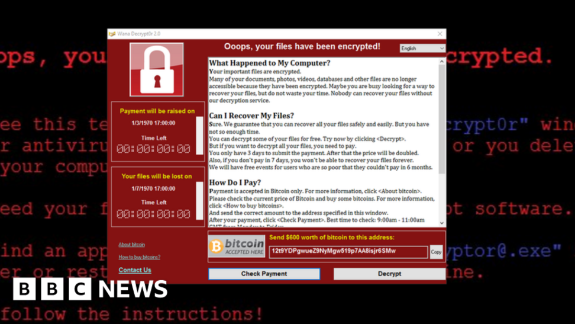
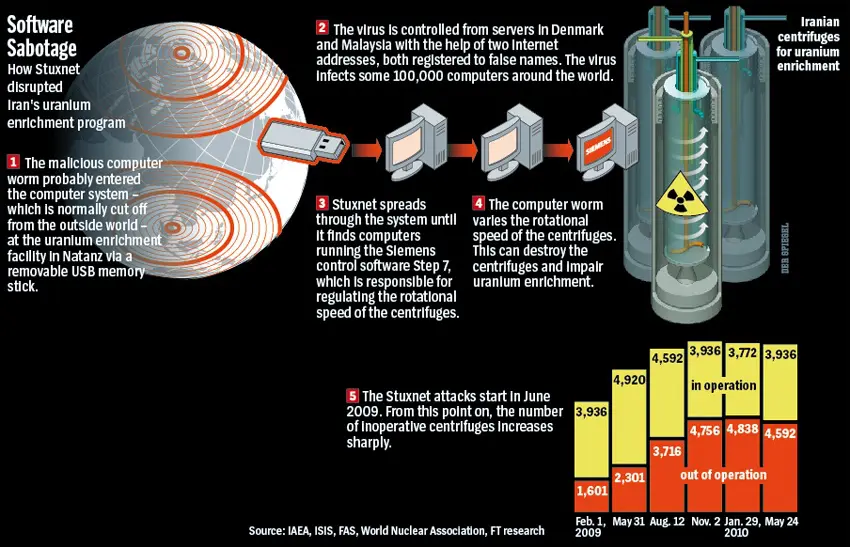

Cybersecurity is the practice of protecting computer systems, networks, and sensitive information from unauthorized access, use, disclosure, disruption, modification, or destruction. It encompasses a wide range of technologies, processes, and practices designed to safeguard digital information and prevent cyberattacks.

Network security: This involves protecting the integrity and availability of networks and the data that flows over them.
Cloud security: This involves protecting sensitive data stored in the cloud from unauthorized access, breaches, and data loss.

Cybersecurity is important because it helps protect sensitive information, such as personal and financial data, from being accessed or stolen by unauthorized individuals or entities. This is especially important in today's digital age, where a significant amount of personal and business information is stored and transmitted electronically. Additionally, cyber attacks can cause significant financial loss and disruption to businesses and organizations. By implementing effective cybersecurity measures, individuals and organizations can reduce the risk of cyber attacks and protect their information and assets.
A hacker is a person who uses their technical skills to gain unauthorized access to computer systems, networks, or sensitive information. The term "hacker" is often used to refer to individuals who use their skills for illegal or malicious purposes, such as stealing personal information, spreading malware, or disrupting network services.There are generally two types of hackers: Black hat hackers: These are individuals who use their skills for illegal or malicious purposes. They often engage in activities such as stealing personal information, spreading malware, or disrupting network services.White hat hackers: These are individuals who use their skills to identify and help mitigate security vulnerabilities in computer systems and networks. They are also known as "ethical hackers" or "penetration testers" and are often employed by organizations to test their own security or contracted to do so by other organizations
Cybercrime refers to criminal activities that are carried out using the internet or other digital networks. Some examples of cybercrime include:

Preventing cybercrime requires a multi-faceted approach that includes a combination of technical, administrative, and educational measures. Here are a few steps that individuals and organizations can take to protect themselves from cybercrime:
Copyright 2023 All Right Reserved By Abhijeet